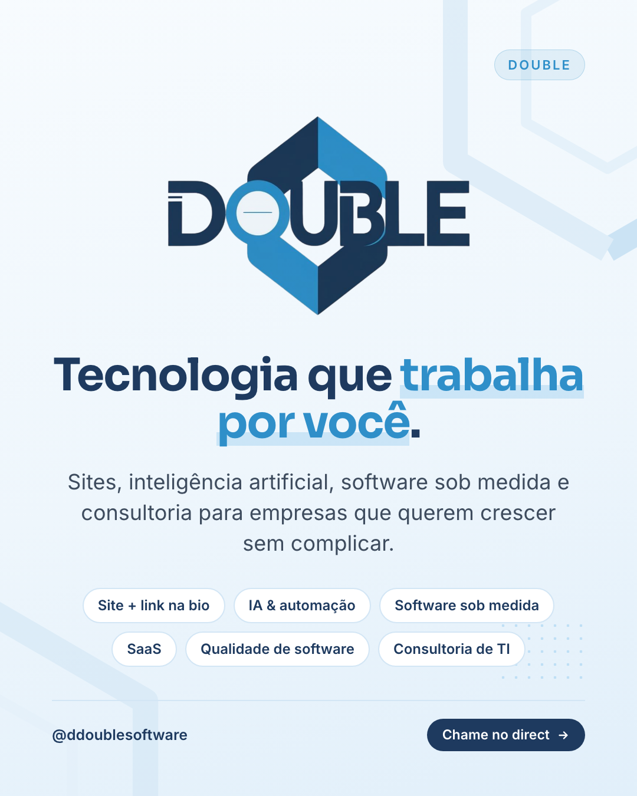
#1 · qui., 05 de nov. · 12hDouble
Legenda
Prazer, somos a Double 👋
A gente transforma processos travados, planilhas infinitas e ideias paradas na gaveta em tecnologia que funciona de verdade.
O que fazemos:
🌐 Site profissional + página de link na bio
🤖 IA para chatbots, automações, rotinas e integrações
🛠️ Software sob medida, do jeito que a sua empresa trabalha
☁️ SaaS: do MVP ao produto com assinatura recorrente
✅ Qualidade de software: testes e entregas sem susto
🧭 Consultoria de TI para decidir o próximo passo com clareza
A partir de hoje, todo dia ao meio-dia tem conteúdo novo por aqui. Ativa o 🔔 e salva os posts que fizerem sentido pro seu negócio.
👉 Quer conversar? Chama no direct ou toca no link da bio.
#DoubleSoftware #tecnologia #transformacaodigital #softwarehouse #inovacao #empreendedorismo
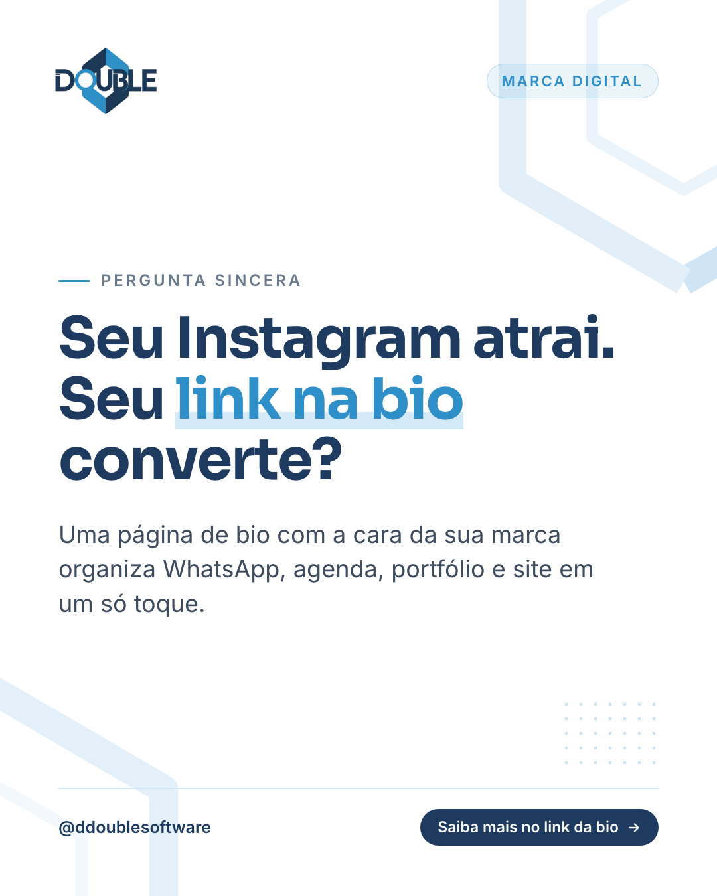
#2 · sex., 06 de nov. · 12hMarca digital
Legenda
O cliente viu seu post, gostou, foi no perfil… e encontrou um link genérico, sem identidade e com 12 opções confusas. 😬
É ali que muita venda se perde.
Uma página de bio profissional faz o caminho ficar óbvio:
✔️ WhatsApp com mensagem pronta
✔️ Agendamento e localização
✔️ Portfólio e serviços
✔️ Tudo com as cores, a logo e o tom da sua marca
Na Double a gente entrega o upgrade completo: página de bio + site profissional, rápidos no celular e prontos para converter.
💬 Comenta "BIO" que a gente te mostra exemplos.
#DoubleSoftware #tecnologia #transformacaodigital #sitesprofissionais #linknabio #presencadigital #webdesign #marketingdigital
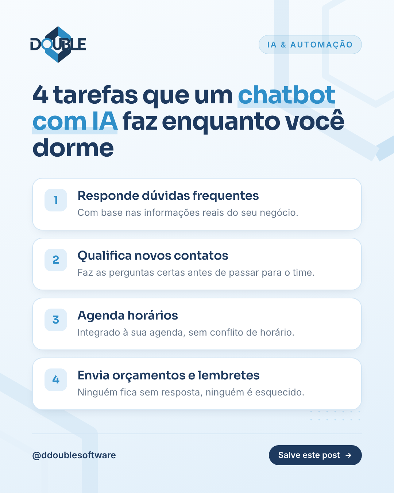
#3 · sáb., 07 de nov. · 12hIA & automação
Legenda
São 23h e um cliente pergunta preço no WhatsApp. Quem responde? 🌙
Um chatbot com IA bem configurado não é aquele robô travado de "digite 1 para…". Ele entende a pergunta, consulta as informações da sua empresa e responde como alguém do seu time.
E quando a conversa pede um humano, ele passa a bola com todo o contexto já organizado.
Resultado: atendimento rápido 24h e sua equipe focada no que realmente precisa de gente.
📌 Salva pra lembrar e manda pra quem vive respondendo as mesmas perguntas todo dia.
#DoubleSoftware #tecnologia #transformacaodigital #inteligenciaartificial #chatbot #automacao #IA #produtividade
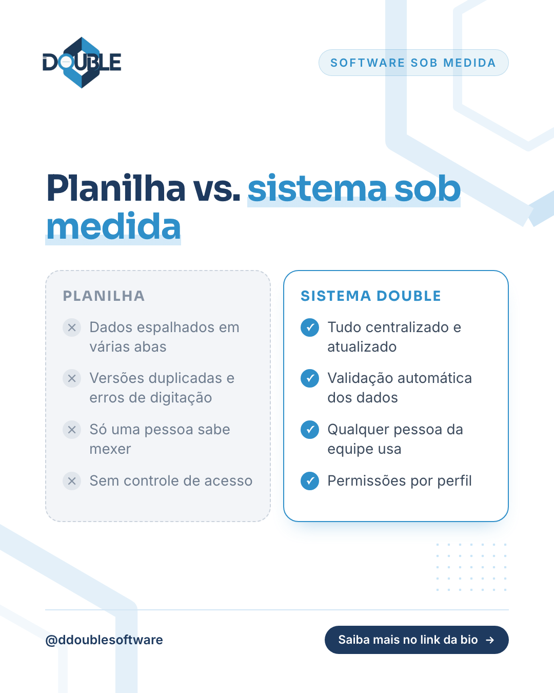
#4 · dom., 08 de nov. · 12hSoftware sob medida
Legenda
A planilha é ótima… até deixar de ser. 📊
Quando o negócio cresce, ela vira um labirinto: "qual é a versão certa?", "quem apagou essa linha?", "só a fulana sabe atualizar".
Um sistema sob medida resolve isso sem obrigar sua equipe a mudar o jeito de trabalhar. A gente desenha o software em cima do seu processo, e não o contrário.
🔁 Se você se identificou com o lado esquerdo, chama a gente no direct. Dá pra sair da planilha sem dor de cabeça.
#DoubleSoftware #tecnologia #transformacaodigital #softwaresobmedida #desenvolvimentodesoftware #sistemas #gestaoempresarial
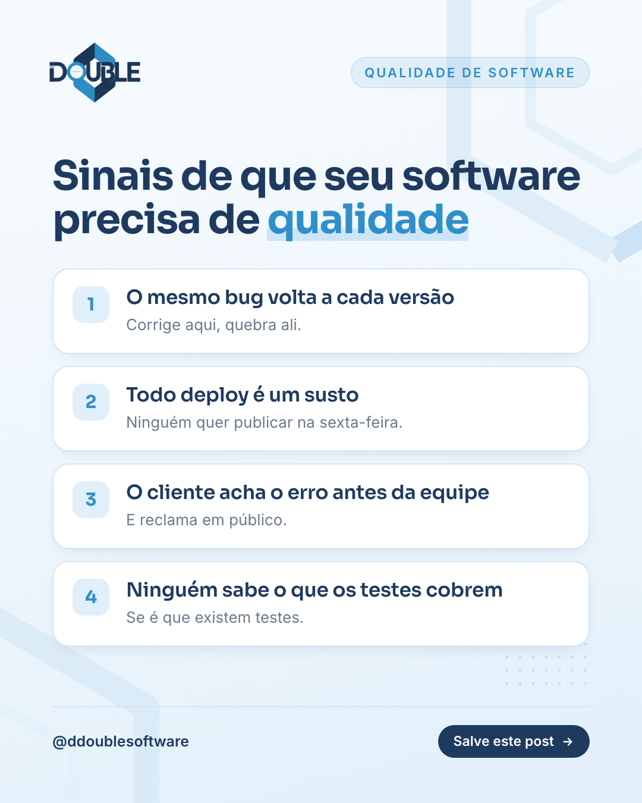
#5 · seg., 09 de nov. · 12hQualidade de software
Legenda
Quantos desses você marcou? 👀
Qualidade de software não é burocracia nem "etapa final". É o que permite entregar rápido sem quebrar o que já funciona.
Na Double a gente monta a esteira de qualidade do seu produto: testes automatizados, revisão de código, testes de carga e monitoramento depois de cada entrega.
✅ Menos retrabalho, mais confiança para evoluir.
Comenta aqui quantos sinais você marcou de 0 a 4 👇
#DoubleSoftware #tecnologia #transformacaodigital #qualidadedesoftware #QA #testesautomatizados #devops
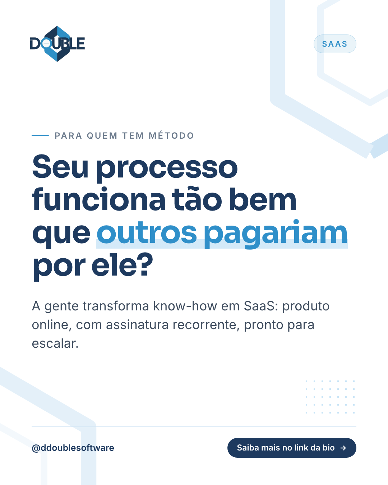
#6 · ter., 10 de nov. · 12hSaaS
Legenda
Tem empresa que resolveu um problema tão bem internamente que, sem perceber, criou um produto. 💡
Aquele controle que você montou, aquele fluxo que só a sua equipe tem, aquele método que os clientes sempre elogiam… pode virar um SaaS.
SaaS = software vendido como assinatura. Em vez de uma venda única, receita recorrente todo mês.
Na Double a gente ajuda da validação da ideia ao produto no ar: MVP, login, planos, pagamentos e evolução contínua.
💬 Tem uma ideia assim? Conta pra gente no direct.
#DoubleSoftware #tecnologia #transformacaodigital #saas #produtodigital #startup #receitarecorrente
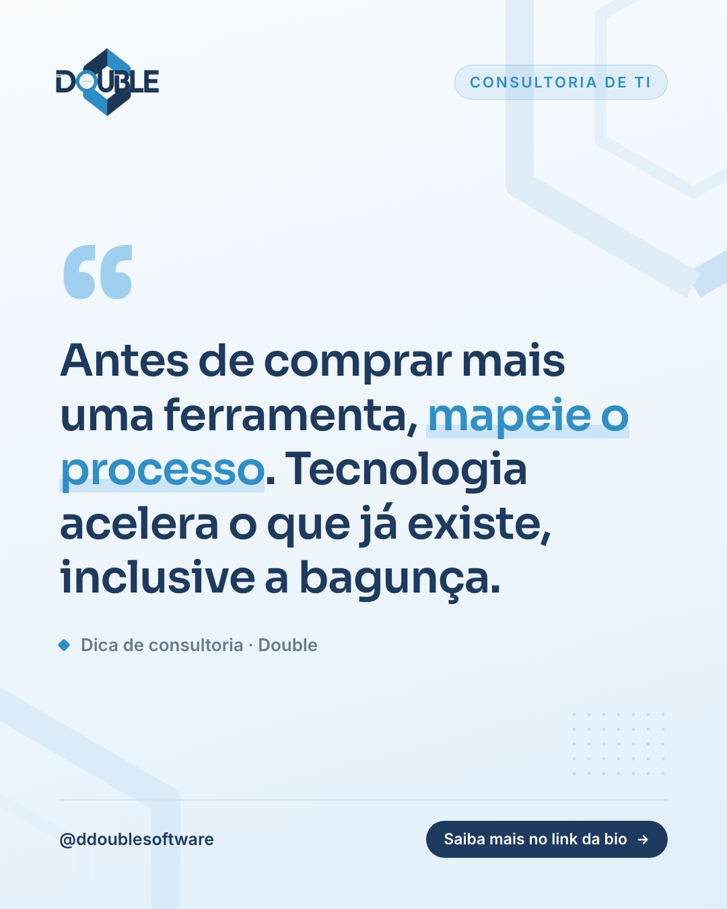
#7 · qua., 11 de nov. · 12hConsultoria de TI
Legenda
Já assinou uma ferramenta incrível que ninguém usou depois de um mês? 🫠
Na maioria das vezes o problema não é a ferramenta. É que o processo por trás dela não estava claro.
Antes de investir em tecnologia, vale responder:
1️⃣ Qual tarefa queremos melhorar?
2️⃣ Quem faz, quando e com quais informações?
3️⃣ Onde estão os gargalos?
4️⃣ Como vamos medir se melhorou?
Na consultoria de TI da Double, a gente começa por aí. Só depois escolhe (ou constrói) a ferramenta certa.
📌 Salva antes da próxima assinatura.
#DoubleSoftware #tecnologia #transformacaodigital #consultoriadeti #gestaodeti #inovacao #empreendedorismo
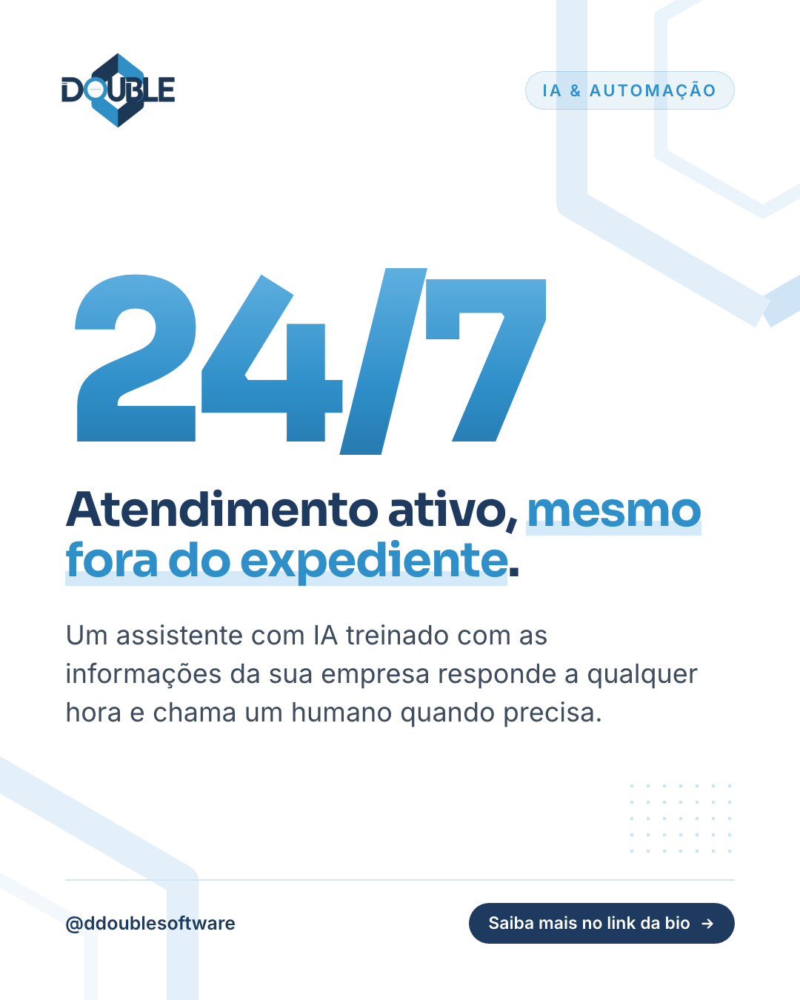
#8 · qui., 12 de nov. · 12hIA & automação
Legenda
Seu cliente não manda mensagem só em horário comercial. 🕐
Com um assistente de IA no WhatsApp, Instagram ou site, ele recebe resposta na hora: preços, horários, serviços, status de pedido, agendamento.
E o mais importante: a IA é treinada com as informações da SUA empresa, no tom da sua marca. Quando o assunto exige alguém do time, ela transfere com o histórico da conversa.
🤖 Quer ver como ficaria no seu negócio? Toca no link da bio e fala com a gente.
#DoubleSoftware #tecnologia #transformacaodigital #inteligenciaartificial #chatbot #automacao #IA #produtividade
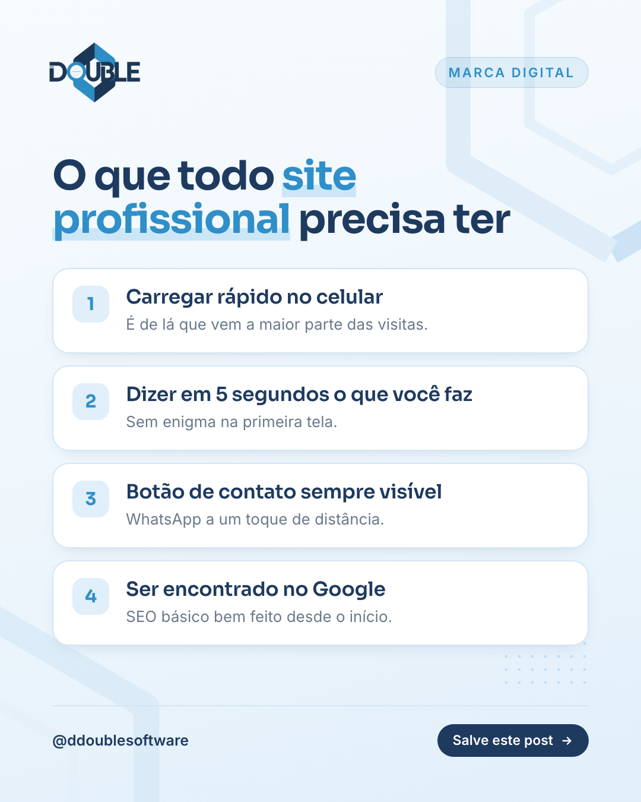
#9 · sex., 13 de nov. · 12hMarca digital
Legenda
Site bonito é ótimo. Site que traz cliente é melhor ainda. 🚀
Antes de pensar em animações e efeitos, confere se o básico está lá:
📱 Abre rápido no celular?
🎯 Quem entra entende o que você faz?
💬 O contato está fácil?
🔎 Aparece quando alguém procura seu serviço?
Na Double, todo site já nasce com esses quatro pontos resolvidos e com a identidade visual da sua marca.
🔁 Manda pra aquele amigo que está "pensando em fazer um site" há dois anos.
#DoubleSoftware #tecnologia #transformacaodigital #sitesprofissionais #linknabio #presencadigital #webdesign #marketingdigital
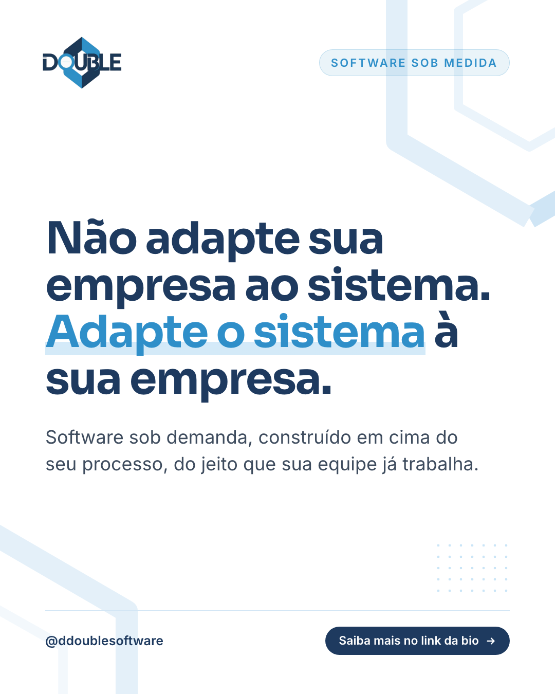
#10 · sáb., 14 de nov. · 12hSoftware sob medida
Legenda
Sistema pronto é ótimo para processos padrão. Mas e quando o seu diferencial está justamente no jeito que você faz as coisas? 🤔
Forçar a equipe a se encaixar num software genérico gera gambiarra, planilha paralela e retrabalho.
Com software sob demanda, cada tela, regra e relatório é pensado para a sua operação, e evolui junto com o negócio.
🛠️ Na Double a gente começa com uma imersão no seu processo e um protótipo navegável antes de escrever a primeira linha de código.
👉 Link na bio para conversar.
#DoubleSoftware #tecnologia #transformacaodigital #softwaresobmedida #desenvolvimentodesoftware #sistemas #gestaoempresarial
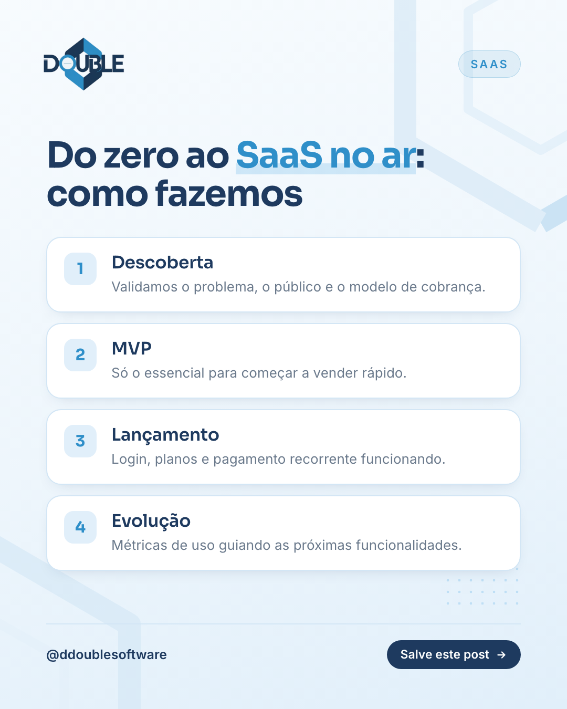
#11 · dom., 15 de nov. · 12hSaaS
Legenda
Todo SaaS de sucesso começou pequeno. 🌱
O erro mais comum é tentar lançar tudo de uma vez: meses de desenvolvimento antes de o primeiro cliente pagar.
Nosso caminho é outro:
🔍 Descoberta: o problema existe? Quem paga por ele?
🧪 MVP: o mínimo que já entrega valor
🚀 Lançamento: cobrança recorrente e onboarding simples
📈 Evolução: dados reais decidindo o que construir
Assim você valida rápido e investe com segurança.
💬 Qual etapa é o seu maior desafio hoje? Conta aqui 👇
#DoubleSoftware #tecnologia #transformacaodigital #saas #produtodigital #startup #receitarecorrente
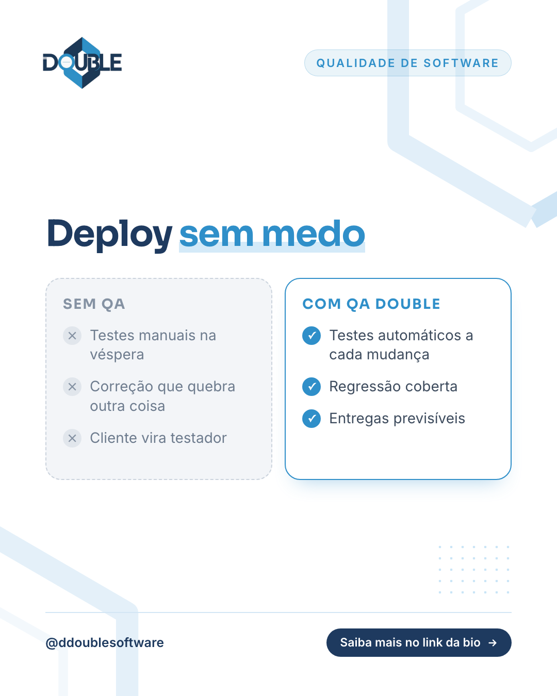
#12 · seg., 16 de nov. · 12hQualidade de software
Legenda
"Pode subir, testei aqui e funcionou." 😅
Essa frase já derrubou muito sistema em produção.
Com uma esteira de qualidade, cada alteração passa automaticamente por testes antes de chegar ao cliente. Se algo quebrar, quem descobre é o pipeline, não o usuário.
Na Double a gente implanta testes automatizados, revisão de código e monitoramento no seu projeto, novo ou legado.
✅ Publicar uma nova versão deveria ser rotina, não evento de risco.
📩 Fala com a gente pelo link da bio.
#DoubleSoftware #tecnologia #transformacaodigital #qualidadedesoftware #QA #testesautomatizados #devops
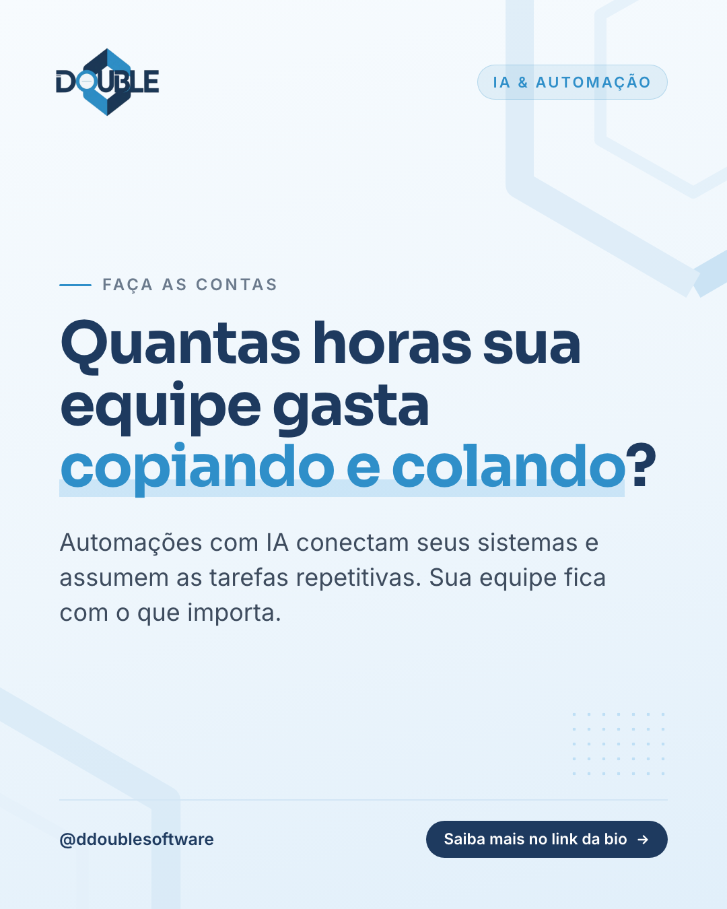
#13 · ter., 17 de nov. · 12hIA & automação
Legenda
Copiar dado do e-mail para a planilha. Da planilha para o sistema. Do sistema para o relatório. Todo. Santo. Dia. 🔁
Soma os minutos de cada pessoa da equipe por semana. Assusta, né?
Com automações e integrações inteligentes, essas tarefas rodam sozinhas: a IA lê, classifica, preenche, avisa e gera o relatório.
Não é sobre substituir pessoas. É sobre tirar delas o trabalho que ninguém gosta de fazer.
🤖 Comenta "AUTOMATIZA" e a gente te mostra por onde começar.
#DoubleSoftware #tecnologia #transformacaodigital #inteligenciaartificial #chatbot #automacao #IA #produtividade
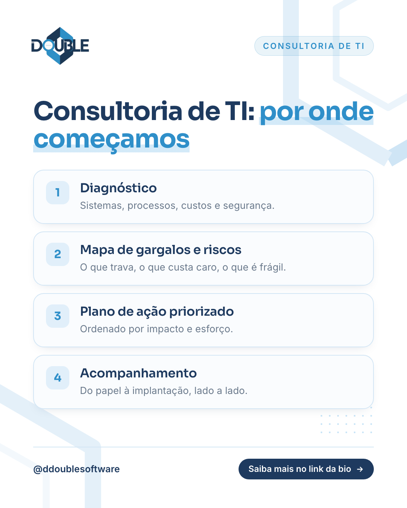
#14 · qua., 18 de nov. · 12hConsultoria de TI
Legenda
TI não precisa ser uma caixa-preta. 🧭
Nossa consultoria começa entendendo o seu negócio, não vendendo ferramenta. A partir do diagnóstico, você recebe um plano claro: o que resolver primeiro, quanto custa e qual o retorno esperado.
Ideal para empresas que:
▪️ cresceram e a TI ficou para trás
▪️ pagam por várias ferramentas que não conversam
▪️ querem usar IA, mas não sabem por onde começar
👉 Agende uma conversa pelo link da bio.
#DoubleSoftware #tecnologia #transformacaodigital #consultoriadeti #gestaodeti #inovacao #empreendedorismo
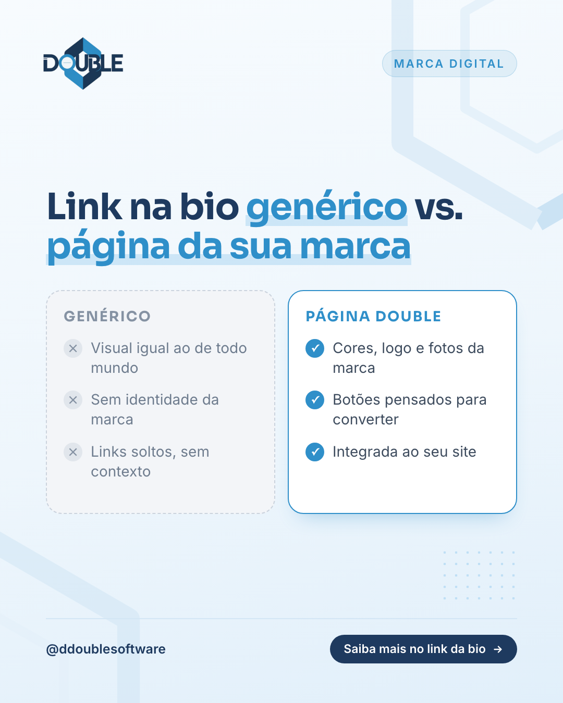
#15 · qui., 19 de nov. · 12hMarca digital
Legenda
Sua marca investe em post bonito, foto profissional, identidade visual… e na hora do clique entrega uma página genérica? 🤷
A página de link na bio é a ponte entre o Instagram e a venda. Ela precisa ter a mesma cara do seu perfil e guiar o cliente para a ação certa.
Na Double a gente cria a sua página de bio personalizada e, se quiser, o site completo junto: tudo conectado e com a sua identidade.
👉 Toca no link da bio e vê um exemplo na prática.
#DoubleSoftware #tecnologia #transformacaodigital #sitesprofissionais #linknabio #presencadigital #webdesign #marketingdigital
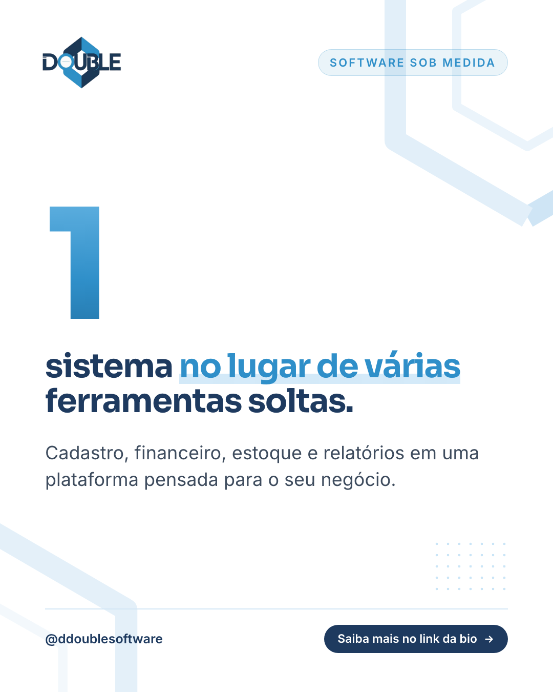
#16 · sex., 20 de nov. · 12hSoftware sob medida
Legenda
Uma ferramenta para clientes, outra para financeiro, outra para estoque, uma planilha para juntar tudo… e ninguém confia no número final. 🧩
Quando os dados vivem em lugares diferentes, a gestão vira caça ao tesouro.
Um sistema sob medida integra tudo em um só lugar: a informação é cadastrada uma vez e aparece onde precisa. Relatório em tempo real, sem retrabalho.
🛠️ Quer entender se faz sentido para a sua empresa? Chama no direct.
#DoubleSoftware #tecnologia #transformacaodigital #softwaresobmedida #desenvolvimentodesoftware #sistemas #gestaoempresarial
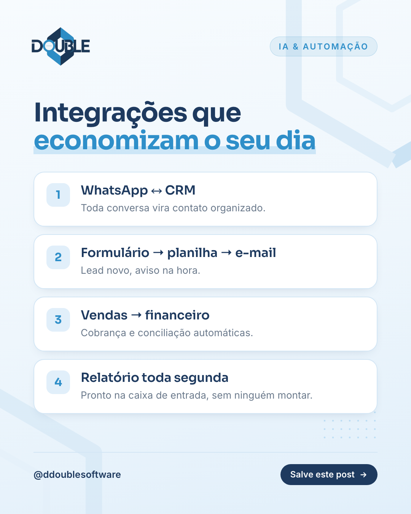
#17 · sáb., 21 de nov. · 12hIA & automação
Legenda
Seus sistemas conversam entre si ou é você quem faz a ponte? 🔌
Integração é aquele investimento que some da vista e aparece no relógio: horas devolvidas toda semana.
Alguns exemplos que a gente implementa:
📲 WhatsApp alimentando o CRM
📝 Formulários que viram tarefas e alertas
💰 Vendas que geram cobrança automaticamente
📊 Relatórios que chegam prontos
E com IA no meio do caminho, dá pra classificar, resumir e decidir o próximo passo sozinho.
📌 Salva e marca quem precisa ver isso.
#DoubleSoftware #tecnologia #transformacaodigital #inteligenciaartificial #chatbot #automacao #IA #produtividade
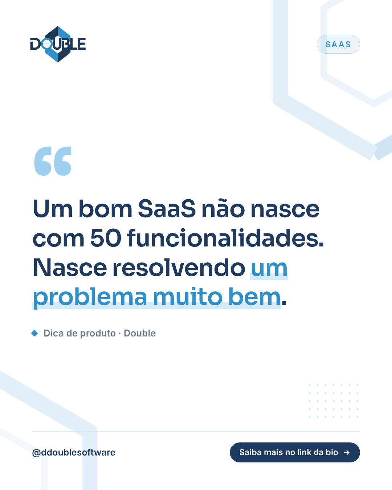
#18 · dom., 22 de nov. · 12hSaaS
Legenda
A lista de funcionalidades do seu SaaS está enorme? Respira. 🧘
Os produtos que dão certo costumam começar focados: um público claro, uma dor específica e uma solução que faz isso melhor que qualquer alternativa.
O resto vem depois, guiado pelo uso real dos clientes, e não por suposições.
Na Double a gente ajuda a recortar o MVP certo para você lançar mais rápido e gastar menos.
💬 Qual é o problema que o seu produto resolve? Escreve em uma frase aqui nos comentários 👇
#DoubleSoftware #tecnologia #transformacaodigital #saas #produtodigital #startup #receitarecorrente
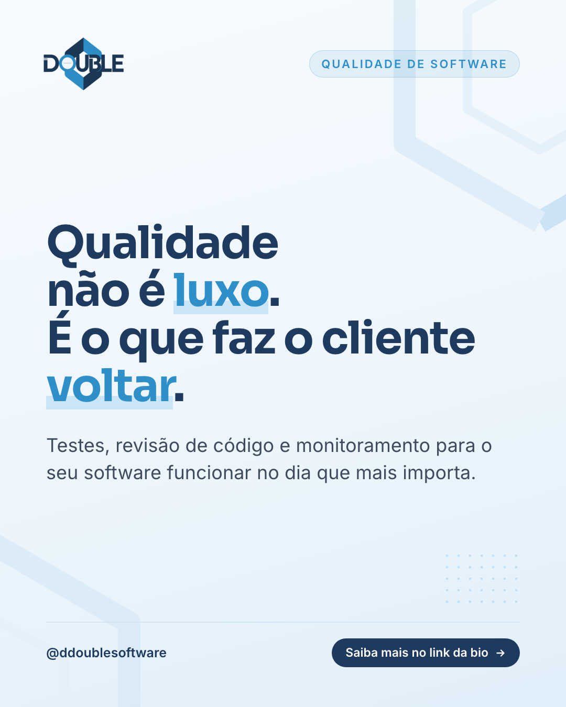
#19 · seg., 23 de nov. · 12hQualidade de software
Legenda
O cliente não vê seu código. Ele vê se o botão funciona, se a página carrega e se o pagamento passa. 💳
Cada falha em produção custa venda, suporte e reputação. Cada entrega estável constrói confiança.
Qualidade de software é isso: garantir que o que funciona hoje continue funcionando amanhã, mesmo depois de dez novas versões.
✅ Na Double, qualidade faz parte de todo projeto e também pode ser contratada para o software que você já tem.
👉 Link na bio.
#DoubleSoftware #tecnologia #transformacaodigital #qualidadedesoftware #QA #testesautomatizados #devops
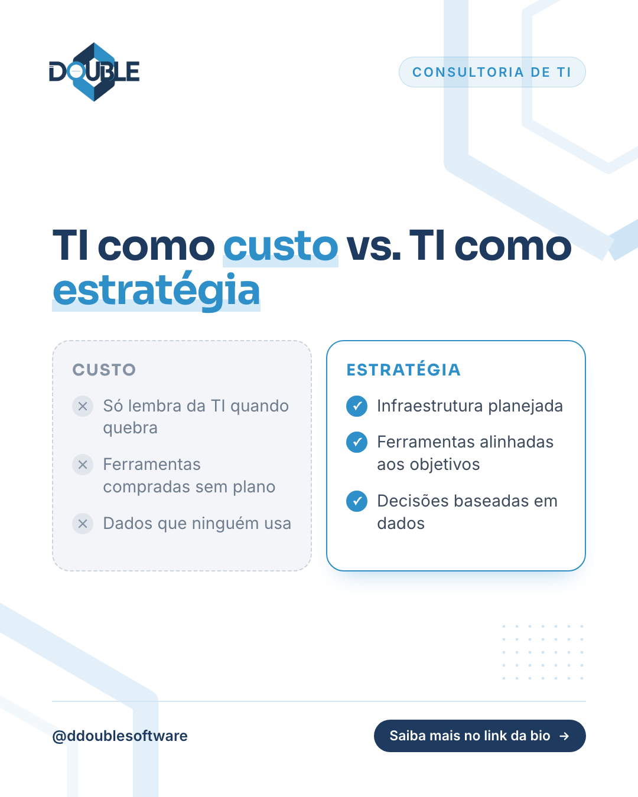
#20 · ter., 24 de nov. · 12hConsultoria de TI
Legenda
Para muitas empresas, TI é só aquela conta que chega todo mês. 💸
Mas quando ela é bem planejada, vira vantagem competitiva: processos mais rápidos, dados confiáveis e espaço para inovar com IA e automação.
A virada de chave não exige gastar mais. Exige gastar melhor, com prioridades claras.
🧭 É exatamente isso que a consultoria de TI da Double entrega.
De que lado a sua empresa está hoje? Responde aqui: CUSTO ou ESTRATÉGIA 👇
#DoubleSoftware #tecnologia #transformacaodigital #consultoriadeti #gestaodeti #inovacao #empreendedorismo
#21 · qua., 25 de nov. · 12hMarca digital
Legenda
Antes de te chamar no WhatsApp, o cliente pesquisa. Abre o perfil, toca no link, entra no site. 🔎
Em poucos segundos ele responde, mesmo sem perceber: "essa empresa é séria?"
Visual desatualizado, página lenta ou informação confusa fazem ele voltar pro Google e escolher outro.
O upgrade de marca digital da Double resolve isso: site e página de bio modernos, rápidos e com a sua identidade, feitos para gerar confiança e contato.
👉 Link na bio para pedir o seu.
#DoubleSoftware #tecnologia #transformacaodigital #sitesprofissionais #linknabio #presencadigital #webdesign #marketingdigital
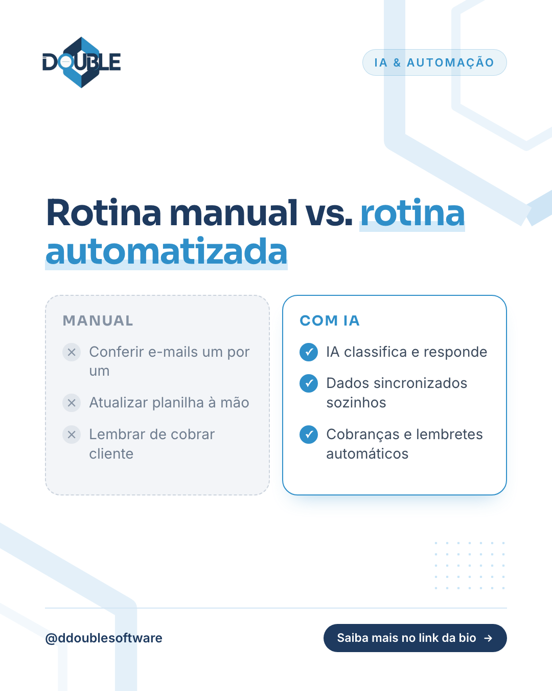
#22 · qui., 26 de nov. · 12hIA & automação
Legenda
Quanto da sua semana é gasto com tarefas que uma máquina faria melhor? ⏱️
Rotinas automatizadas com IA cuidam do operacional: ler e organizar e-mails, atualizar sistemas, enviar lembretes, gerar resumos e relatórios.
Você define as regras uma vez. A automação executa todos os dias, sem esquecer e sem cansar.
🤖 Na Double a gente mapeia suas rotinas e automatiza as que dão mais retorno primeiro.
💬 Qual tarefa você automatizaria amanhã? Conta aqui 👇
#DoubleSoftware #tecnologia #transformacaodigital #inteligenciaartificial #chatbot #automacao #IA #produtividade
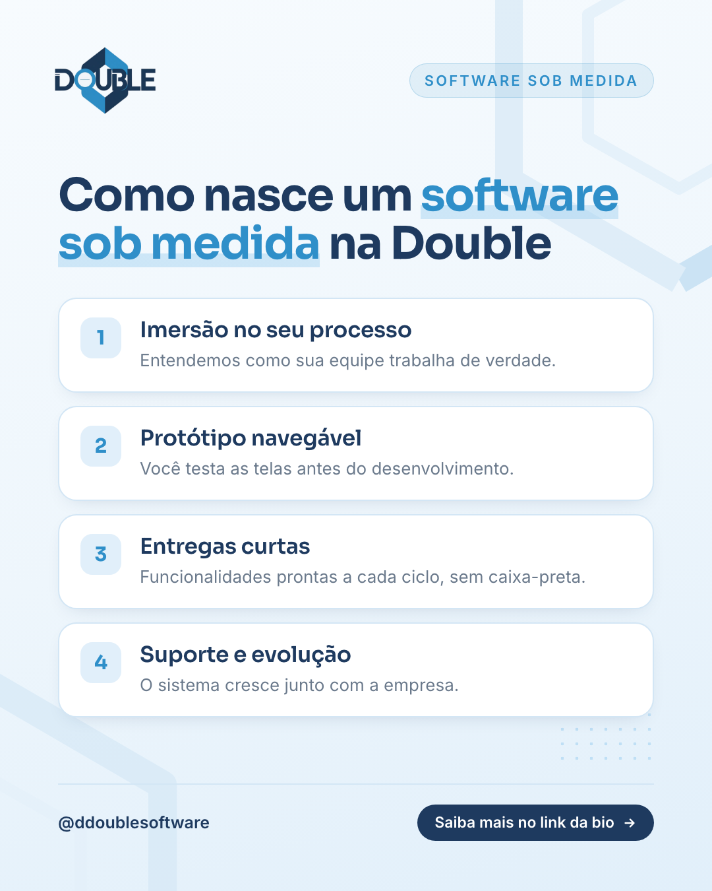
#23 · sex., 27 de nov. · 12hSoftware sob medida
Legenda
Medo de contratar um sistema e receber algo que ninguém pediu? A gente também teria. 😅
Por isso nosso processo é transparente do início ao fim:
🔍 Imersão para entender o problema real
🖥️ Protótipo clicável para validar antes de desenvolver
🔁 Entregas curtas, com você acompanhando cada etapa
🛟 Suporte e evolução depois do lançamento
Sem surpresa no final, sem projeto que some por meses.
👉 Quer tirar uma ideia do papel? Link na bio.
#DoubleSoftware #tecnologia #transformacaodigital #softwaresobmedida #desenvolvimentodesoftware #sistemas #gestaoempresarial
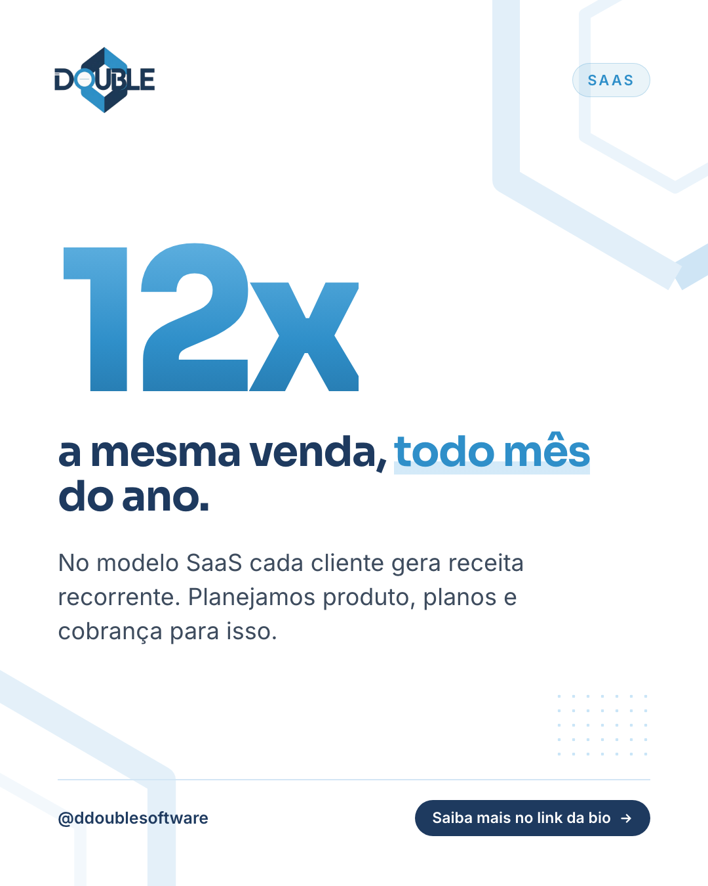
#24 · sáb., 28 de nov. · 12hSaaS
Legenda
Vender uma vez é bom. Vender todo mês para o mesmo cliente é outro jogo. 📈
Essa é a lógica do SaaS: em vez de projetos pontuais, assinaturas que se renovam e tornam o faturamento previsível.
Mas receita recorrente exige produto que entrega valor contínuo, onboarding simples e uma cobrança que funciona sozinha.
☁️ Na Double a gente constrói o SaaS completo: plataforma, planos, pagamentos, painel administrativo e métricas.
💬 Chama no direct e conta sua ideia.
#DoubleSoftware #tecnologia #transformacaodigital #saas #produtodigital #startup #receitarecorrente
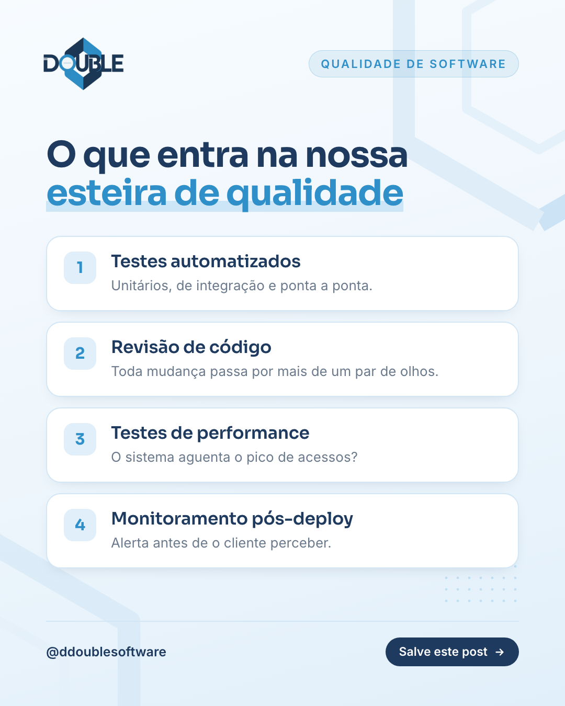
#25 · dom., 29 de nov. · 12hQualidade de software
Legenda
Qualidade não acontece por acaso. Ela é construída em camadas. 🧱
✅ Testes automatizados pegam regressões em minutos
👀 Revisão de código evita problemas antes de existirem
⚡ Testes de performance garantem que a Black Friday não derrube o sistema
📡 Monitoramento avisa o time antes do cliente reclamar
Tudo isso pode ser aplicado a um projeto novo ou ao software que sua empresa já usa.
📌 Salva como checklist para o seu próximo projeto.
#DoubleSoftware #tecnologia #transformacaodigital #qualidadedesoftware #QA #testesautomatizados #devops
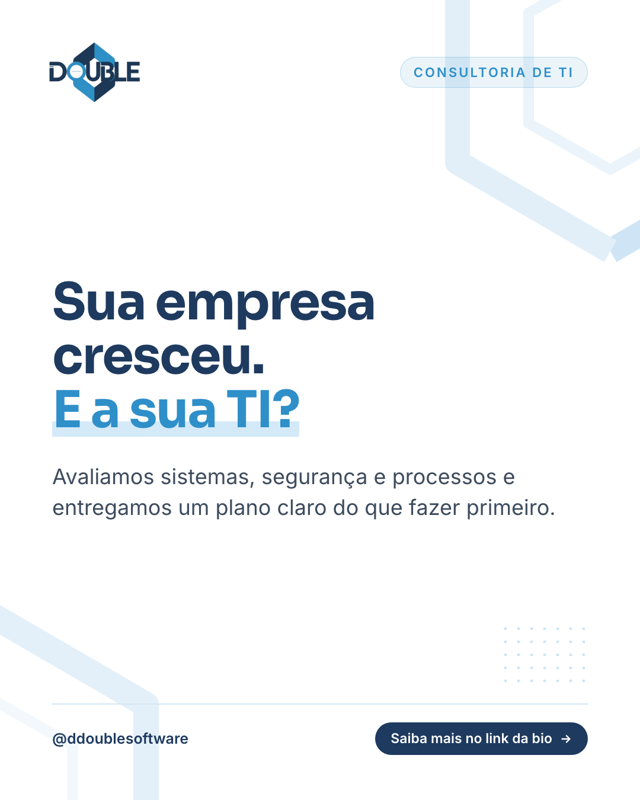
#26 · seg., 30 de nov. · 12hConsultoria de TI
Legenda
Mais clientes, mais equipe, mais dados… e a mesma estrutura de tecnologia de quando tudo começou. 😬
Os sinais aparecem aos poucos: sistema lento, senha compartilhada no grupo, backup que ninguém testou, ferramentas que não conversam.
A consultoria de TI da Double faz um raio-x completo e entrega um plano priorizado: o que é urgente, o que pode esperar e onde a tecnologia pode acelerar o crescimento.
🧭 Fala com a gente pelo link da bio.
#DoubleSoftware #tecnologia #transformacaodigital #consultoriadeti #gestaodeti #inovacao #empreendedorismo
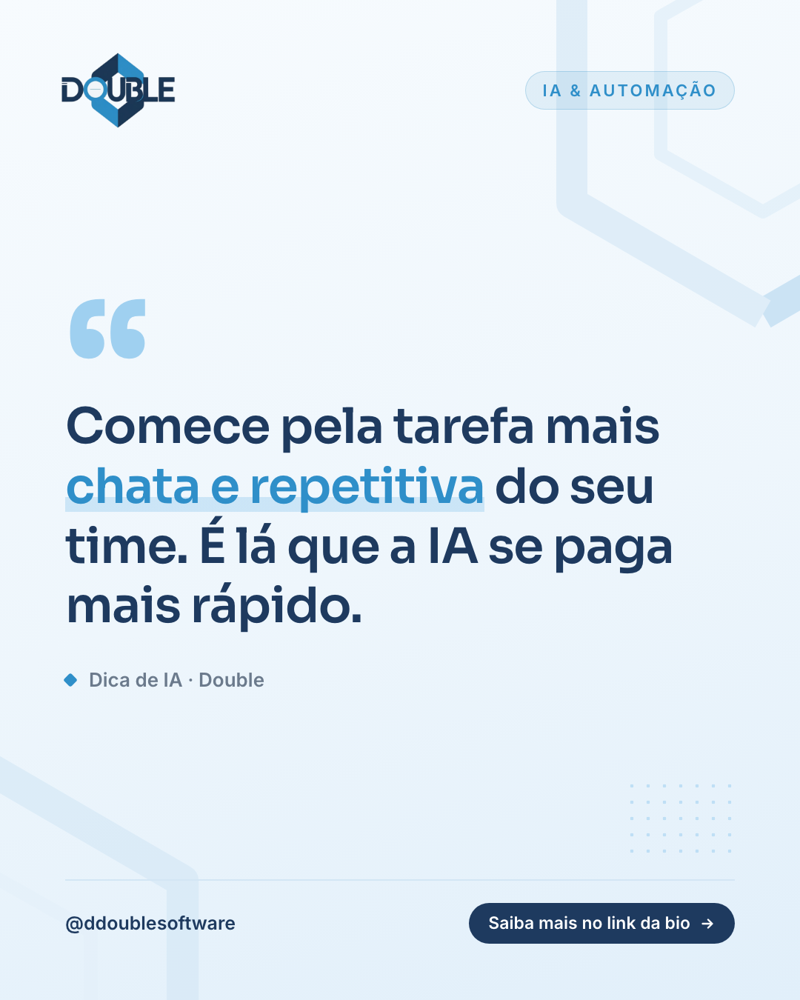
#27 · ter., 01 de dez. · 12hIA & automação
Legenda
Quer usar IA na empresa e não sabe por onde começar? 🤖
Esquece o projeto gigante. Pergunta pro seu time: "qual tarefa você faria feliz em nunca mais fazer?"
Geralmente a resposta é algo repetitivo, com regras claras e muito volume: responder dúvidas, organizar documentos, preencher sistemas, gerar relatórios.
É ali que a automação com IA traz retorno rápido e ganha a confiança da equipe para os próximos passos.
📌 Salva e leva essa pergunta para a próxima reunião.
#DoubleSoftware #tecnologia #transformacaodigital #inteligenciaartificial #chatbot #automacao #IA #produtividade
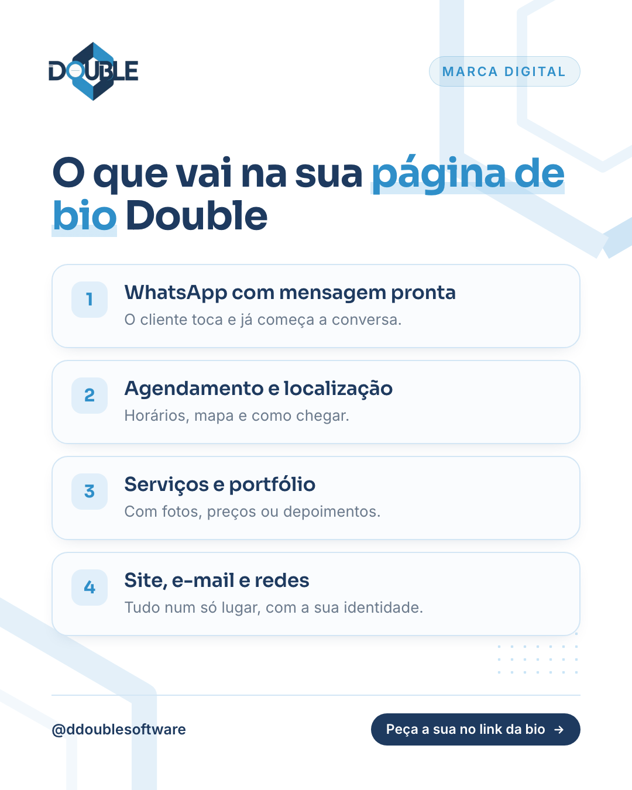
#28 · qua., 02 de dez. · 12hMarca digital
Legenda
Um link. Tudo o que seu cliente precisa. ✨
A página de bio da Double é feita sob medida para o seu negócio: cores, logo, fotos e textos da sua marca, com os botões na ordem certa para levar o cliente até a ação.
Funciona para profissionais liberais, clínicas, lojas, criadores e empresas de serviço. E pode vir junto com um site completo no mesmo estilo.
👉 Peça a sua pelo link da bio ou comenta "QUERO" que a gente te chama.
#DoubleSoftware #tecnologia #transformacaodigital #sitesprofissionais #linknabio #presencadigital #webdesign #marketingdigital
#29 · qui., 03 de dez. · 12hSoftware sob medida
Legenda
Todo empresário tem aquela ideia: "se eu tivesse um sistema que fizesse X, minha vida seria outra". 💭
Às vezes é um app para a equipe de campo. Às vezes um portal para clientes. Às vezes um painel que junta tudo.
A boa notícia: dá pra começar pequeno, com um protótipo, e validar antes de investir pesado.
🛠️ Na Double a gente transforma essa ideia em software, com processo transparente e entregas que você acompanha.
💬 Qual é a sua ideia? Manda no direct.
#DoubleSoftware #tecnologia #transformacaodigital #softwaresobmedida #desenvolvimentodesoftware #sistemas #gestaoempresarial
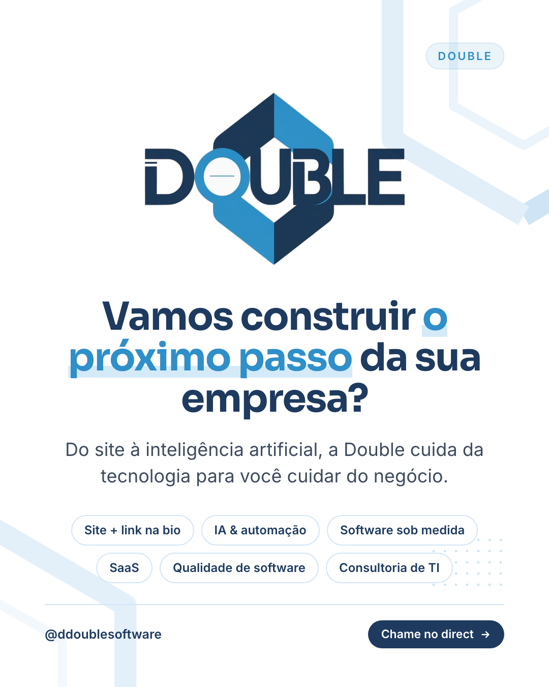
#30 · sex., 04 de dez. · 12hDouble
Legenda
Um mês de conteúdo depois, a pergunta é simples: qual é o próximo passo da sua empresa? 🚀
🌐 Uma presença digital que gera confiança
🤖 IA e automações que devolvem horas ao seu time
🛠️ Um sistema feito do seu jeito
☁️ Um produto SaaS com receita recorrente
✅ Software estável, entrega após entrega
🧭 Um plano de TI claro para crescer
Seja qual for, a Double está pronta para construir junto com você.
👉 Chama no direct ou toca no link da bio. A primeira conversa é por nossa conta.
#DoubleSoftware #tecnologia #transformacaodigital #softwarehouse #inovacao #empreendedorismo